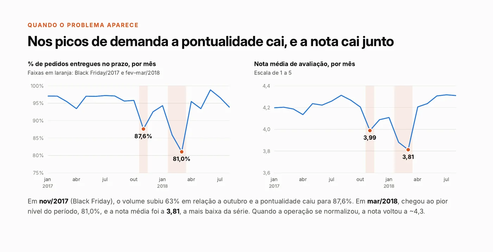
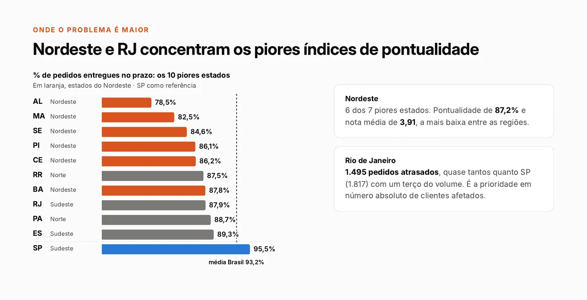
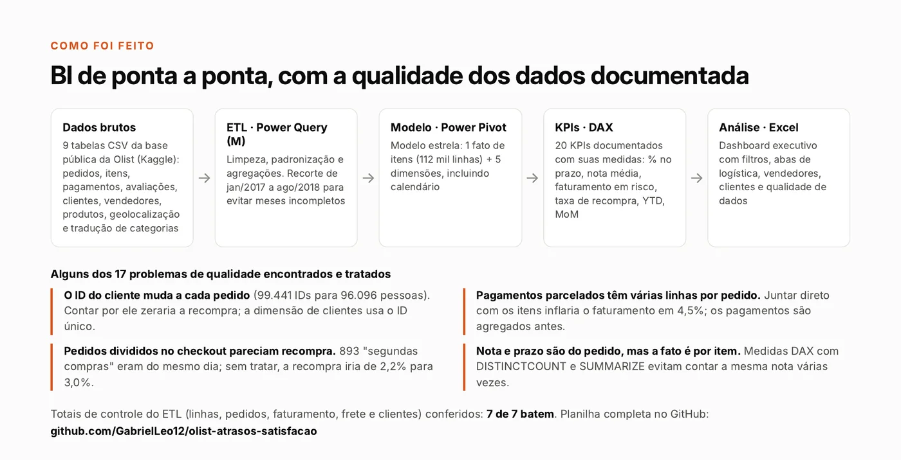

Explore os dados
Escolha o período, a região ou o estado do cliente. Todos os indicadores e gráficos são recalculados a partir dos 98 mil pedidos do modelo que montei no Excel. No ranking de estados, clique em um estado para filtrar.
Nota média pelo prazo de entrega
Nota média por diferença entre a entrega e a data prometida
Pedidos atrasados × notas ruins
Participação de cada grupo nos pedidos e nas notas 1 e 2
Mês a mês
% de pedidos entregues no prazo (linha) e nota média (pontos) · passe o mouse ou toque para ver o mês
Estados com pior pontualidade
% de pedidos entregues no prazo · estados com 300+ pedidos no recorte · clique para filtrar
Recompra depois da 1ª compra
% de clientes que voltaram a comprar, pela experiência na 1ª compra
Fonte: Brazilian E-Commerce Public Dataset by Olist (Kaggle), pedidos de jan/2017 a ago/2018, tratados no meu modelo em Power Query e Power Pivot. Nota = 1 avaliação por pedido.
O que eu descobri
1 · Tolerância do cliente
O cliente tolera até 3 dias de atraso
Entregar antes do prazo quase não muda a nota: ela fica entre 4,2 e 4,3. Com até 3 dias de atraso, a nota cai para cerca de 3,3. Do 4º dia em diante, cai para perto de 2. A janela para agir é curta: o cliente precisa ser avisado e compensado antes do 4º dia.

2 · Sazonalidade
Nos picos de demanda, a pontualidade cai e a nota cai junto
Na Black Friday de 2017, a pontualidade caiu para 87,6%. Em março de 2018, chegou ao pior nível do período, 81,0%, e a nota média foi a mais baixa da série. Quando a operação se normalizou, a nota voltou.

3 · Geografia
Nordeste e Rio de Janeiro concentram os piores índices
Seis dos sete piores estados em pontualidade são do Nordeste. O Rio de Janeiro tem quase tantos pedidos atrasados quanto São Paulo com um terço do volume, por isso é a prioridade pelo número absoluto de clientes afetados.

4 · Transporte e vendedores
A maior parte do atraso é do transporte, mas os vendedores também pesam
Nos pedidos atrasados, o vendedor postou fora do prazo 3,7 vezes mais (27,7% contra 7,6%). Classifiquei os 625 vendedores com mais de 30 pedidos, e 69 ficaram em "ação imediata".

O que eu recomendo
SLA de postagem para vendedores
Acompanhar a postagem dentro do prazo e abrir plano de ação com os 69 vendedores classificados como "ação imediata".
Revisar a logística do Nordeste e do RJ
Negociar SLA e transportadora por rota nas regiões com pior pontualidade.
Plano de capacidade para os picos
Preparar a operação para a Black Friday e o 1º trimestre, quando a pontualidade mais cai.
Comunicação antes do 4º dia
Avisar o cliente e oferecer compensação enquanto o atraso ainda é curto.
Calibrar o prazo prometido
A Olist promete cerca de 24 dias e entrega em cerca de 12. Prazos mais realistas por rota podem melhorar a conversão.
Retenção depois da 1ª compra
Cerca de 98% dos clientes compram uma única vez, então a primeira experiência pesa muito.
Como eu fiz
- ETL no Power QueryIntegração das 9 tabelas da base, padronização e agregações. Recorte de jan/2017 a ago/2018 para evitar meses incompletos.
- Modelo estrela no Power PivotUma tabela fato de itens de pedido (112 mil linhas) e 5 dimensões: calendário, cliente, produto, vendedor e geografia.
- 20 KPIs em DAX% no prazo, nota média, % de notas 1 e 2, faturamento em risco, taxa de recompra, variação mensal e acumulado no ano, entre outros.
- Qualidade dos dados17 problemas encontrados, documentados e tratados. Por exemplo, os pagamentos parcelados inflariam o faturamento em 4,5%, e o ID do cliente muda a cada pedido. Os 7 totais de controle do ETL conferem.
- Dashboard e análises no ExcelDashboard executivo com filtros de estado, categoria e período, além de abas de logística, vendedores, clientes e qualidade de dados.
